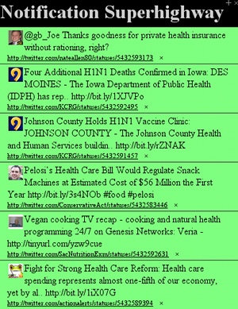

Information Superhighway
 By Astro, on 05 Nov 2009
By Astro, on 05 Nov 2009 Because we provide a service to developers and businesses it is quite difficult to “show off” to people without prior knowledge of the technology. Julien built our website with quite some interactivity, but it is still rather hard to understand because you’re going to see the gory protocol in detail.
The well-standardized XMPP with its many implementations has always made it easy for developers to use us. There’s a vast amount of tools and libraries out there. That makes it easy to put together a demo consumer of Superfeedr notifications in very short time.
So we want a graphical app but not restrict ourselves to one platform. The web browser, where you don’t even need to install anything, just click and everything’s in a sandbox is the solution. That’s why it has to be a webapp.
How it’s built
The nature of our service is very dynamic and content must be delivered quickly. That requires JavaScript. Despite not being affine to that language, I’ve always been intrigued how AJAX, nowadays a common web technology, can be used with a tiny glue of BOSH to run an XMPP client in just your browser.
I took StropheJS, easened XML and DOM handling a bit with JQuery, and made a really tiny webapp: Notification Superhighway.
Log in, subscribe to feeds (or even Twitter searches), and get amazed by that millions of content producers on the Information Superhighway.
Running it yourself
- Pull the code :
git clone git://github.com/astro/superhighway.git
cd superhighway
- Get the StropheJs code:
git submodule init
git submodule update
- Proxy the
http://localhost/http-bind/to usehttp://superfeedr.com/http-bind/. The browser’s Same Origin Policy will allow script access only to the local domain for good reason. To proxy the BOSH entry point I included a configuration file for nginx. 1
./start.sh(you may need to usesudo) 2
- http://localhost:8080 should do it :). The Interface clearly needs a little work! Please fork Notification SuperHighway :)
1 On a Mac, I suggest installing Nginx with sudo port install nginx.
2 On a Mac, you will need to comment the use epoll; line of the nginx configuration.
oss, xmpp, javascript, http, web-appsLiked this post? to get more or read the archive.
Comments